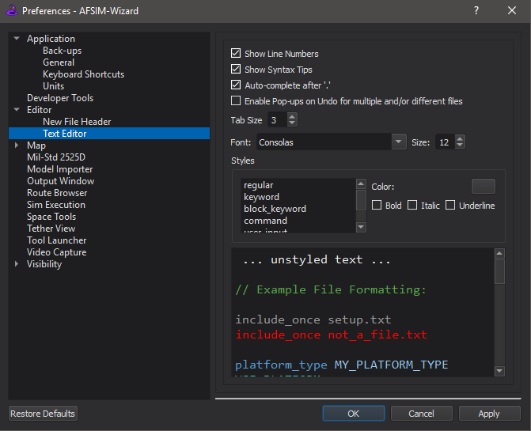
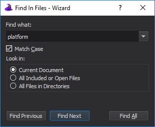

Text Editor - Wizard¶
The Text Editor provides an interface for displaying, editing, navigating, and understanding your scenario files. It provides a set of tools found in modern software Integrated Development Environments (IDEs) (e.g., Microsoft Visual Studio). These tools include syntax highlighting, auto-completion, syntax-tips, context sensitive documentation, and file navigation. The following sections describe each of these tools.
Preferences¶
The Text Editor options are found on the Preferences dialog.
Options include:
Show Line Numbers: When enabled, line numbers are shown in the left margin of the editor
Show Syntax Tips: When enabled, syntax suggestions appear in the active editor
Auto-complete after ‘.’: When enabled, Wizard will provide a list of valid member functions and/or variables when the ‘.’ character is typed after an object name
Enable Pop-ups on Undo for Multiple/Different Files: When enabled, Wizard will generate a confirmation dialog before making a change with Undo that would:
Affect multiple files
Affect a file that is not currently active/focused in a Wizard Text Editor after consecutive uses of Undo
Tab Size: Determines the number of spaces inserted when ‘Tab’ is pressed
Font: Editor text will appear in the selected font
Size: Editor text will appear in the selected size
Styles: Styles determine the text color and markup of Wizard’s grammar. Using styles, the user can further customize the editor, and see changes in the example view before saving.
Note
The user may enable enable performance timers on the editor status bar from the Developer Menu preference option.
Note
Users may hold the control-button and scroll the mouse wheel over an active editor to change the font size in editors.
Margins¶
The margin to the left of the edit area contains line numbers, icons related to errors, warnings, and instances and types, and line-folding boxes.
The line-folding feature provides the capability to collapse blocks of input to a single line. Click the + and - buttons to expand and collapse sections.
Line numbers can be disabled from the Preferences dialog.
Syntax Highlighting¶
Syntax highlighting color codes the WSF commands in your scenario files, which makes reading and understanding the content easier. The following example illustrates the default coloring scheme.

Unknown Commands¶
Take note that unknown commands are underlined in red. The first platform (10_iads_cmdr) in this example contains no errors. The second platform command is actually an edit of the first one, therefore, IADS_CMDR is not recognized as valid input. The third platform block contains an invalid command. The fourth platform block is invalid because of the uppercase ‘M’.
Reference Errors and Warnings¶
A reference error occurs when an object or type that does not exist is required. A reference warning occurs in when a reference object or type is not found but is not required for the simulation to execute. Right-clicking on the text with the reference error or warning will provide options to correct the problem. Reference errors may also occur when a name is reused.
Syntax Tips¶
The Syntax Tips feature provides guidance on what the current command expects next from the user. In the following example we’ve started to type the platform command and the syntax tips are automatically suggested. Syntax Tips can be disabled from the preferences.

Command Documentation¶
Through the use of context sensitive documentation, users can quickly jump to the documentation for any selected command by right-clicking and selecting Command Documentation. The information will be displayed in the Output Panel on the Command Documentation tab. By selecting the ‘Full Article’ link, the actual html page where the command was pulled from is displayed.
Go To Include¶
The Go To Include feature provides a way to quickly navigate to an included in a scenario file using the include command by bringing up the right-click menu and selecting the ‘Go To Include: <include-filename>’.
Go To Definition¶
The Go To Definition feature provides a way to to quickly jump to the file location for the currently selected WSF type. To use the feature, select the WSF type and use the right-click menu to access the ‘Go To Definition’ option. This feature is also available under the Edit menu or by using hotkeys.
Find References¶
The Find References feature provides a way to quickly generate a list of the locations where a given type is used. In the following image, we find all of the references to the ‘SR_SAM_TELAR’ platform type. To use the tool, select the WSF type and use the right-click menu to access the ‘Find References’ option. This feature is also available under the Edit menu or by using hotkeys.

Find In File¶
The Find In File feature provides a way to search for a string in the current file. The following image shows a find for the search string ‘platform’. This feature is also available under the Edit menu or by using hotkeys.
Find In Files¶
The Find In Files feature provides a way to search for a string in multiple files. The results appears in the Output Panel on the Find Results tab. A list of all matches is displayed. Double-clicking on a match jumps to the match location in the text editor. This feature is also available under the Edit menu or by using hotkeys.
Go To Line¶
The Go To Line feature provides a way to jump the cursor to the specified line. This feature is also available under the Edit menu or by using hotkeys.
Auto Complete¶
The Auto Complete feature provides guidance on what the user must type next when completing a command. It auto suggests known values and types when available. The feature is available from the Edit menu or with the hotkey combo Ctrl+Space.
Comment/Uncomment Selection¶
The Comment and Uncomment Selection feature provides the capability for users to place the currently selected lines of text in or out of comments. The first image below shows some selected lines, while the second image shows the results of commenting the selection. This feature is available under the Edit menu or by using hotkeys.
Before: Lines selected for commenting¶
After: Selection commented out¶